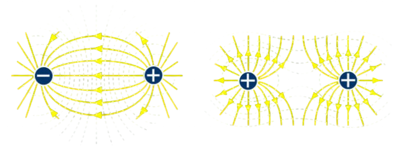

Find the acceleration of a sphere of 2kg with a charge of 5 μC in an electric field of 10N/C.
Solution:
\(F=qE= 5 \cdot 10^{-6} \times 10 = 5 \times 10^{-5} \: N\)
\(a=\frac{F}{m}=2.5 \times 10^{-5} \: ms^{-2}\)
Property of each point in space when a charge is present. It’s a vector field, therefore it has both magnitude and direction. We call it E, and we define it as the force experienced by a test charge that has a value of + 1.
If we draw the continuation of the vectors, we find that the force or field lines go from positive charges to negative charges, as shown in the figure below.
\[\vec{E}= \frac{\Sigma \vec{F}}{q} = \Sigma k \frac{Q_i}{r_i^2}\]
Find the acceleration of a sphere of 2kg with a charge of 5 μC in an electric field of 10N/C.
Solution:
\(F=qE= 5 \cdot 10^{-6} \times 10 = 5 \times 10^{-5} \: N\)
\(a=\frac{F}{m}=2.5 \times 10^{-5} \: ms^{-2}\)
Written by Sofia Osorio